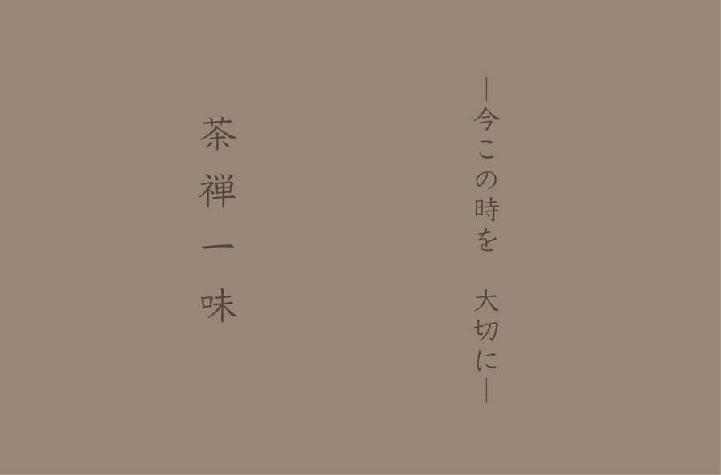

June 24, 2026
お茶を飲むということ On Drinking Tea

「お茶を飲む」
ということ。
ただ喉を潤すということではなく、
立ち上る湯気に儚さを感じ、
その繊細な味わいを喫し、
鼻から抜ける香りの余韻を愉しむ。
つまり、自分の感覚に集中することだと思います。
禅宗の教えも同じです。
今この時に心を集中させること。
世俗の些末なものごとから少し距離を置いて、
自分の身体の感覚に集中すること。
お茶と禅は、考え方や臨み方が同一なのです。
それを表しているのが、「茶禅一味」という言葉。
お茶の香り、透き通る水色、茶器の手触りとほのかに伝わる温もり。
一つひとつに心を集中し、一口滋味深いお茶をすすれば、
口内だけでなく、胸の内、頭のもやもやも すっきりとして来ます。
そんな穏やかな時間をお届けいたします。
2026年 6月 24日
鳥飼茶房